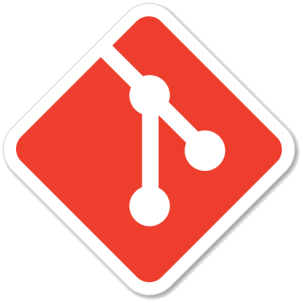

Git¶
Git est un système de contrôle de versions décentralisé. C’est un logiciel libre créé par Linus Torvalds, auteur du noyau Linux, et distribué selon les termes de la licence publique générale GNU version 2. Il s’agit du logiciel de gestion de versions le plus populaire.

Particularités techniques¶
Similaire en cela à BitKeeper, Git ne repose pas sur un serveur centralisé, mais il utilise un système de connexion pair-à-pair. Le code informatique développé est non seulement stocké sur l’ordinateur de chaque contributeur du projet, mais il peut également l’être sur un serveur dédié. C’est un outil qui se veut simple et performant.
Fonctionnement¶
Git possède deux structures de données: une base d’objets et un cache de répertoires:
- l’objet blob (pour binary large object désignant un ensemble de données brutes7), qui représente le contenu d’un fichier;
- l’objet tree (mot anglais signifiant «arbre»), qui décrit une arborescence de fichier. Il est constitué d’une liste d’objets de type blob et des informations qui leur sont associées, tel que le nom du fichier et les permissions. Il peut contenir récursivement d’autres objets tree pour représenter les sous-répertoires.
Markdown¶
Le langage typographique Markdown simplifie le langage HTML. # titre est équivalent à `
titre
, par exemple. Voyons la typographie Markdown:- Diviser les sections du texte avec des titres
# titre,## sous-titre,### ...; - Convertir le texte en italique avec
*italique*, en gras avec**gras**ou les deux avec***deux***. - Créer des listes avec une suite de
- item. - Ajouter une image avec
et un lien avec[texte](www). - Consulter le pense-bête pour plus détail et plus de balises.